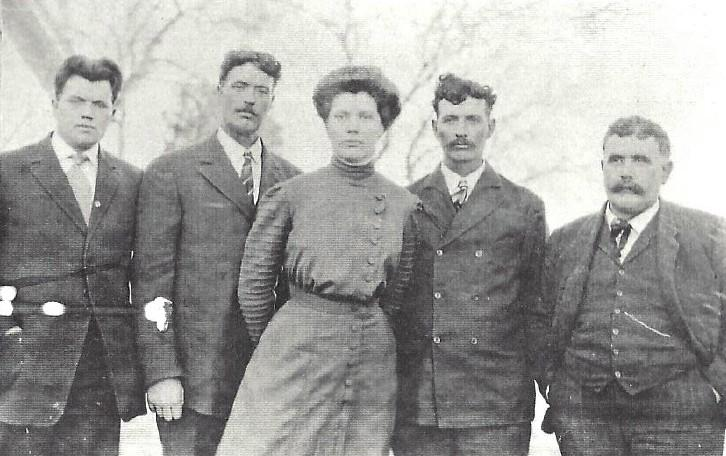

The Origin of Culver's 2002–03–02 Two guys with weird names found a fast food chain. Culver, Hiram Lorenzo and Babcock, Nicander Wilson started the first Culver's restaurant in 2003. We didn't know any better back then.  Pic unrelated